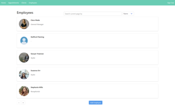

“I'm a programmer. I like programming. And the best way I've found to have a positive impact on code
is to write it.”
― Robert C. Martin
Welcome to my portfolio page. Here you can find my work experience and projects.
I am a recent graduate from Laurentian University with a Bachelor of Computer Science.
I am passionate about software development and always eager to learn new technologies
and programming languages. I am a quick learner and experienced team player.
Recent Work
-
Increased company efficiency by leading an initiative to convert physical IT incident forms
to web-based applications.
-
Decreased form processing time by 55% through digitalizing and integrating new forms with
the company database.
-
Achieved high and error-free request throughput by designing efficient SQL queries.
-
Attained a 30% increase in user experience satisfaction by designing user-friendly UI using
HTML, CSS, and Bootstrap.
-
Boosted team productivity by speeding up the time it takes to make a request by 60%.
-
Worked with a team of 10+ analysts to provide 3000+ clients with fast and efficient software
and hardware support.
-
Reduced organizational hardware costs by conducting repair and troubleshooting of LAN
devices.
-
Managed and resolved IT issues with a 95% resolution rate by providing high-quality
technical support to clients.
-
Increased efficiency of .NET applications by implementing the best programming principles
and guidelines.
-
Enhanced employee knowledge of security standards and procedures by creating new employee
training materials.
-
Effectively communicated with patients, colleagues, and non-medical personnel to achieve
high quality patient treatment under critical conditions.
-
Provided high-quality patient treatment in high-stress environments while overseeing 20+
crew members.
-
Maintained a safe working environment for both patients and staff members.
Public Projects
P2P File Sharing Application Suite
The client-side application provides GUI for peer-to-peer file-sharing
services, allowing clients to exchange
registered files. The server-side application uses a SOAP-based web service that provides
features to users, such as creating
new accounts, file registration, and searching.

Employee Management Dashboard
An interactive dashboard for management of employees. Features drag and
drop sorting, addition of new
employees, searching, pagination and usage of API interaction.


{kind=link}
{kind=link}